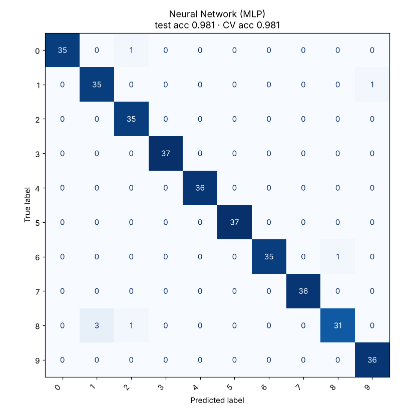

Neural Network (MLP)
Stacks layers of simple units; each layer transforms the previous one, so together they can learn very complex boundaries.
Try it
Experiment: On Spiral, try 1 layer of 2 neurons (it can’t), then 2 layers of 8. Depth lets the network compose shapes.
The idea
Each neuron computes a weighted sum of its inputs and passes it through a non-linear activation (tanh or ReLU). On its own a neuron draws one soft straight line. A hidden layer combines several lines into regions; a second layer combines regions into intricate shapes.
Training adjusts every weight a little at a time to reduce the error, using backpropagation to work out each weight’s share of the blame. The demo trains live: watch the boundary bend as the loss falls.
How it works, step by step
- Forward pass: feed inputs through each layer (weighted sums, then activations) to get class probabilities.
- Compute the loss (cross-entropy) between predictions and true labels.
- Backward pass: backpropagation computes the gradient of the loss for every weight.
- Update the weights with an optimiser such as Adam, and repeat for many epochs.
ŷ = softmax(W₂h + b₂)
w ← w − η · ∂Loss/∂wWithout the non-linear activation, any number of layers would collapse into a single linear model.
Strengths and weaknesses
Strengths
- Learns very complex, non-linear patterns
- Flexible architecture for any input type
- Scales with data and compute
- The basis of CNNs, transformers and modern AI
Weaknesses
- Needs more data than classic models
- Many hyperparameters (layers, neurons, learning rate)
- A black box that’s hard to interpret
- Overfits small data without regularisation
Use it when: Large data sets with complex patterns, or as the base for image, audio and text models.
Avoid it when: Small tabular data sets, where gradient boosting is usually better and simpler.
In this repository
Dataset: Digits (1797 rows, 64 features)

from sklearn.neural_network import MLPClassifier
from sklearn.pipeline import make_pipeline
from sklearn.preprocessing import StandardScaler
mlp = make_pipeline(StandardScaler(), MLPClassifier(hidden_layer_sizes=(256,), alpha=1e-4, max_iter=2000))
mlp.fit(X_train, y_train)Full code: models/11_neural_network. Train it on your own data with
python models/11_neural_network/train.py --data your.csv --target column.
Check yourself
Without them, stacked layers are still one linear function.
The optimiser then uses those gradients to update the weights.
Neural networks shine with lots of data and unstructured inputs.
Answer all three correctly to mark this model as learned.